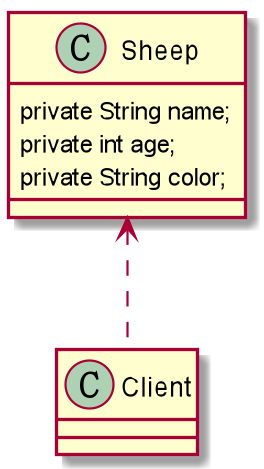
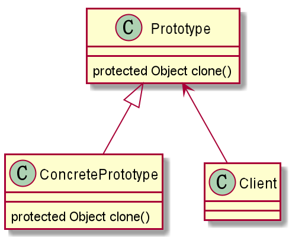

什么是原型设计模式？
原型设计模式 —> 创建型模式
传统模式
传统的方式的优缺点
优点是比较好理解，简单易操作; 创建新的对象时，总是需要重新获取原始对象的属性，如果创建的对象比较复杂，效率较低; 总是需要重新初始化对象，而不是动态地获得对象运行时的状态，不够灵活; 改进的思路：
思路：Java 中 Object 类是所有类的根类，Object 类提供了一个 clone() 方法，该方法可以将一个Java对象复制一份，但是需要实现 clone 的 Java 类必须要实现一个接口 Cloneable，该接口表示该类能够复制且具有复制的能力 => 原型模式。

Sheep
1 2 3 4 5 6 7 8 9 10 11 12 13 14 15 16 17 18 19 20 21 22 23 24 25 26 27 28 29 30 31 32 33 34 35 36 37 38 39 40 41 42 43 44 45 public class Sheep private String name; private int age; private String color; public Sheep (String name, int age, String color) this .name = name; this .age = age; this .color = color; } public String getName () return name; } public void setName (String name) this .name = name; } public int getAge () return age; } public void setAge (int age) this .age = age; } public String getColor () return color; } public void setColor (String color) this .color = color; } @Override public String toString () return "Sheep{" + "name='" + name + '\'' + ", age=" + age + ", color='" + color + '\'' + '}' ; } }
Client
1 2 3 4 5 6 7 8 9 10 11 12 13 14 15 16 17 18 19 public class Client public static void main (String[] args) Sheep sheep = new Sheep("Tom" , 1 , "白色" ); Sheep sheep1 = new Sheep(sheep.getName(), sheep.getAge(), sheep.getColor()); Sheep sheep2 = new Sheep(sheep.getName(), sheep.getAge(), sheep.getColor()); Sheep sheep3 = new Sheep(sheep.getName(), sheep.getAge(), sheep.getColor()); System.out.println("sheep：" + sheep); System.out.println("sheep1：" + sheep1); System.out.println("sheep2：" + sheep2); System.out.println("sheep3：" + sheep3); } }
原型模式
理解：孙悟空拔出猴毛，变出其他孙悟空
用原型实例指定创建对象的种类，并且通过拷贝这些原型，创建新的对象； 允许一个对象再创建另外一个可定制的对象，无需知道如何创建的细节； 工作原理是通过将一个原型对象传给那个要发动创建的对象，这个要发动创建的对象通过请求原型对象拷贝它们自己来实施创建，即对象 .clone()；
Prototype：原型类，声明一个克隆自己的接口； ConcretePrototype：具体的原型类，实现一个克隆自己的操作； Client：让一个原型对象克隆自己，从而创建-一个新的对象(属性一样)；

Prototype Sheep
1 2 3 4 5 6 7 8 9 10 11 12 13 14 15 16 17 18 19 20 21 22 23 24 25 26 27 28 29 30 31 32 33 34 35 36 37 38 39 40 41 42 43 44 45 46 47 48 49 50 51 52 53 54 55 public class Sheep implements Cloneable private String name; private int age; private String color; public Sheep (String name, int age, String color) this .name = name; this .age = age; this .color = color; } public String getName () return name; } public void setName (String name) this .name = name; } public int getAge () return age; } public void setAge (int age) this .age = age; } public String getColor () return color; } public void setColor (String color) this .color = color; } @Override public String toString () return "Sheep{" + "name='" + name + '\'' + ", age=" + age + ", color='" + color + '\'' + '}' ; } @Override protected Object clone () throws CloneNotSupportedException Object clone = super .clone(); return clone; } }
Prototype Client
1 2 3 4 5 6 7 8 9 10 11 12 13 14 15 16 17 public class Client public static void main (String[] args) throws CloneNotSupportedException Sheep sheep = new Sheep("Tom" , 1 , "黑色" ); Sheep sheep1 = (Sheep) sheep.clone(); Sheep sheep2 = (Sheep) sheep.clone(); System.out.println("sheep：" + sheep); System.out.println("sheep1：" + sheep1); System.out.println("sheep2：" + sheep2); } }
原型模式的注意事项和细节
创建新的对象比较复杂时，可以利用原型模式简化对象的创建过程，同时也能够提高效率； 不用重新初始化对象，而是动态地获得对象运行时的状态； 如果原始对象发生变化(增加或者减少属性)，其它克隆对象的也会发生相应的变化，无需修改代码； 在实现深克隆的时候可能需要比较复杂的代码； 缺点：需要为每一个类配备一个克隆方法，这对全新的类来说不是很难，但对已有的类进行改造时，需要修改其源代码，违背了ocp原则；
原型模式在Spring框架中源码分析
Spring中原型bean的创建，就是原型模式的应用。 <bean id=“user” class=“Spring.IOC.User” scope="prototype" >
浅拷贝
对于数据类型是基本数据类型的成员变量，浅拷贝会直接进行值传递，也就是将该属性值复制一份给新的对象。前面我们克隆羊就是浅拷贝； 对于数据类型是引用数据类型的成员变量，比如说成员变量是某个数组、某个类的对象等，那么浅拷贝会进行引用传递，也就是只是将该成员变量的引用值(内存地址)复制一份给新的对象。因为实际上两个对象的该成员变量都指向同一个实例。在这种情况下，在一个对象中修改该成员变量会影响到另一个对象的该成员变量值。 浅拷贝是使用默认的 clone() 方法来实现的；
深拷贝
复制对象的所有基本数据类型的成员变量值 ；为所有引用数据类型的成员变量申请存储空间，并复制每个引用数据类型成员变量所引用的对象，直到该对象可达的所有对象。也就是说，对象进行深拷贝要对整个对象包括对象的引用类型进行拷贝 ；深拷贝实现方式1：重写 clone() 方法来实现深拷贝； 深拷贝实现方式2：通过对象序列化实现深拷贝(推荐) 。
DeepCloneableTarget
1 2 3 4 5 6 7 8 9 10 11 12 13 14 15 16 17 18 19 20 21 22 23 24 25 26 27 28 29 import java.io.Serializable;public class DeepCloneableTarget implements Serializable , Cloneable private static final long serialVersionUID = 1L ; private String cloneName; private String cloneClass; public DeepCloneableTarget (String cloneName, String cloneClass) this .cloneName = cloneName; this .cloneClass = cloneClass; } @Override public String toString () return "DeepCloneableTarget{" + "cloneName='" + cloneName + '\'' + ", cloneClass='" + cloneClass + '\'' + '}' ; } @Override protected Object clone () throws CloneNotSupportedException return super .clone(); } }
DeepProtoType
1 2 3 4 5 6 7 8 9 10 11 12 13 14 15 16 17 18 19 20 21 22 23 24 25 26 27 28 29 30 31 32 33 34 35 36 37 38 39 40 41 42 43 44 45 46 47 48 49 50 51 52 53 54 55 56 57 58 59 60 61 62 63 64 65 66 67 68 69 import java.io.ByteArrayInputStream;import java.io.ByteArrayOutputStream;import java.io.ObjectInputStream;import java.io.ObjectOutputStream;import java.io.Serializable;public class DeepProtoType implements Serializable , Cloneable public String name; public DeepCloneableTarget deepCloneableTarget; public DeepProtoType () super (); } @Override protected Object clone () throws CloneNotSupportedException Object deep = null ; deep = super .clone(); DeepProtoType deepProtoType = (DeepProtoType) deep; deepProtoType.deepCloneableTarget = (DeepCloneableTarget) deepCloneableTarget.clone(); return deepProtoType; } public Object deepClone () ByteArrayOutputStream bos = null ; ObjectOutputStream oos = null ; ByteArrayInputStream bis = null ; ObjectInputStream ois = null ; try { bos = new ByteArrayOutputStream(); oos = new ObjectOutputStream(bos); oos.writeObject(this ); bis = new ByteArrayInputStream(bos.toByteArray()); ois = new ObjectInputStream(bis); DeepProtoType copyObj = (DeepProtoType) ois.readObject(); return copyObj; } catch (Exception e) { e.printStackTrace(); return null ; } finally { try { bos.close(); oos.close(); bis.close(); ois.close(); } catch (Exception e2) { System.out.println(e2.getMessage()); } } } }
DeepClone Client
1 2 3 4 5 6 7 8 9 10 11 12 13 14 15 16 17 18 19 20 21 public class Client public static void main (String[] args) throws Exception DeepProtoType p = new DeepProtoType(); p.name = "余腾" ; p.deepCloneableTarget = new DeepCloneableTarget("Java" , "Py" ); DeepProtoType p2 = (DeepProtoType) p.deepClone(); System.out.println("p.name=" + p.name + " p.deepCloneableTarget=" + p.deepCloneableTarget.hashCode() + " " + p.deepCloneableTarget.toString()); System.out.println("p2.name=" + p.name + " p2.deepCloneableTarget=" + p2.deepCloneableTarget.hashCode() + " " + p.deepCloneableTarget.toString()); } }
感谢阅读
 支付宝打赏
支付宝打赏
 微信打赏
微信打赏